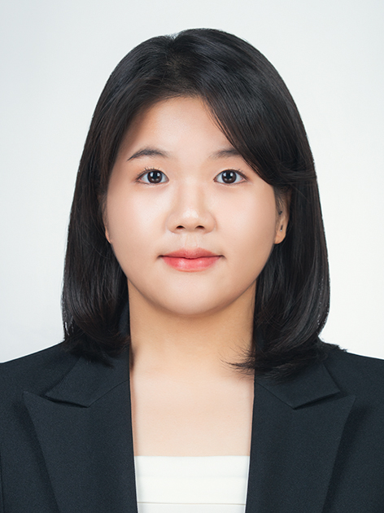

Eun-Seo Han
I am currently a Researcher at The Seoul Institute. I completed an integrated B.Eng.–M.Eng. program in Transportation Engineering at Myongji University advised by Prof. Ho-Chul Park. My research began with public transportation and multimodal mobility and has since developed into a broader interest in how transportation systems and infrastructure can be planned and evaluated to better respond to people’s mobility needs.
My research focuses on understanding how transportation investments translate into changes in people’s mobility and whether those changes meaningfully address existing mobility problems. I am particularly interested in connecting travel behavior with transport planning and investment appraisal—examining not only where and what to invest in, but also how people respond to new transportation options and who is able to benefit from them. Ultimately, I aim to develop data-driven and context-sensitive approaches that bridge human mobility behavior with real-world investment decisions, helping identify transportation interventions that create meaningful and lasting mobility impacts.
Research Interests
